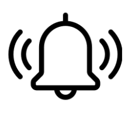

Finding closest vacant roadside parking space system
System Features
Parking Spot Search
+Use of YOLO for detecting available parking spots.
Technology
+Using YOLO for real-time object recognition.
Real-Time Parking Status
+Showing real-time availability of parking spots.
Navigation
+Integrated map to navigate users to available parking spots.

Notification System
+Providing notifications about parking spot availability.
Fee Standards
+Displaying parking fee standards for each parking area.
Available parking spots:
FAQs
The accuracy depends on the quality of the camera and the environment, but it generally achieves over 90% accuracy.
Currently, the system does not support advance reservations. It provides real-time availability information only.
Parking information is updated in real-time as the system detects changes in parking availability.